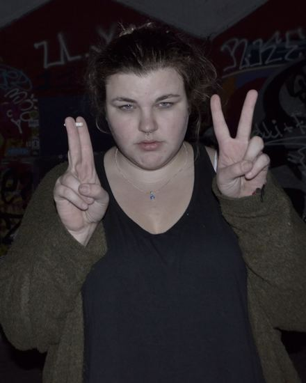
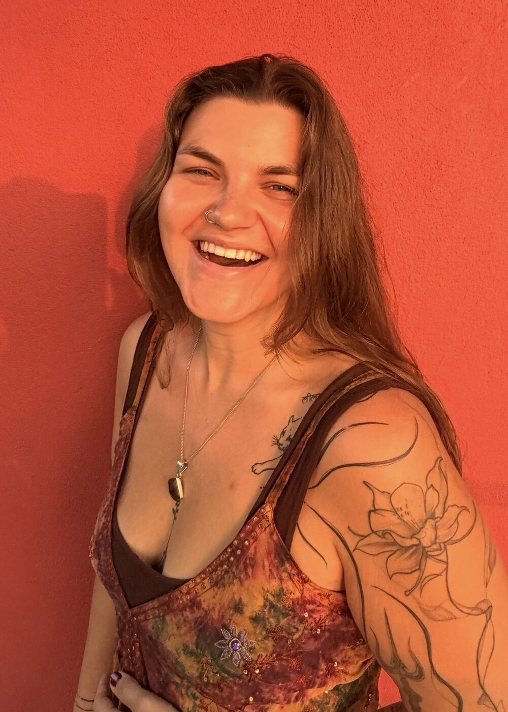
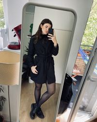
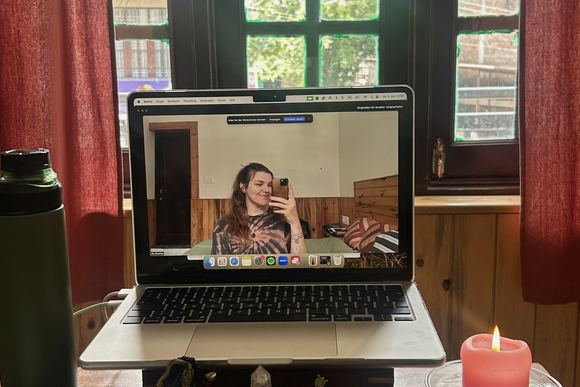

Transformation is possible.
And the foundation for it:
a healthy relationship with yourself.


For years I hated myself and my body. Today I know:
we were never the real problem!
That is exactly why I accompany people towards a loving relationship with themselves and their body ~ so that everything else can grow from there.
Somatic process facilitation & breathwork
01 — About me
Imagine growing up in a seemingly “perfectly normal family”.
House, garden, school, holidays.
And yet you have hated yourself to the core for as long as you can remember.
You cannot help eating all the time, you are ashamed of your body and you simply do not understand why you are so much worse than everyone else.
That’s the story of my life.
Despite what was actually a lovely childhood, “something was always wrong with me”. Binge eating. My weight. The fear of standing out. Depressive phases and times when I hurt myself and no longer want to live. Drugs, emotional dependencies and the compulsion to keep optimising myself.
All of it under the cover of an eating disorder I judge myself for.
“If I could finally manage to be disciplined and thin, everything would be fine.”
One of the biggest lies our society tells us — and one I told myself for a long time.
(I lost over 50 kg and still was not happy. ;) )
Today I know: numbing, control, withdrawal or distraction — whichever survival strategy we reach for, they are intelligent mechanisms of our system that help us cope.
-
-

-

-


None of this means something is wrong with us. It means we are allowed to look at what behind it actually needs our attention.
I had to learn that the painful way, though.
My house of cards collapses when my dad, the only truly safe person in my life, dies far too early, out of nowhere. †
And yet, in this worst pain, something also breaks open.
Deep beneath the grief, a part of me begins to call: “There is more to this.”
Very quietly at first, but I follow it.
I begin to get to know myself, to feel. Travel. Coaching, energy work, a yoga teacher training. My first internship in coaching.
A lot changes for the better. Quickly, even.
But at the same time I sense: something is still stuck there. And I still judge myself for it.
“I know I am good enough — so why don’t I feel it?!”
So I decide to train in trauma, the nervous system and somatic work.
And indeed: after five weeks of daily somatic work with myself, the last big piece of the puzzle reveals itself.
After more than 20 years, I remember that a man from my family’s circle raped me when I was five years old.
At first shock, doubt, uncertainty.
And yet a deep certainty: suddenly everything makes sense.
I take on what is probably the lifelong task of working through this. I look for support again. I learn to talk about it. To show myself. To feel what is there without running away.
With success. Today, even in difficult times, I have deeply taken in that I am allowed to stay loving towards myself.
And with this loving relationship with myself I understand that the rape took one thing from me above all: real connection with other people.
Being truly seen had become life-threatening for me.
I face this in my breathwork teacher training and learn:
Being seen can be safe today.
Through this work I go even deeper, work with my grandmother’s war trauma that I carry in me, and shed layers that are older than my own story.
So you see: besides various trainings, what shapes me most is my own experience.
And that is exactly what my work is about: above all, I accompany and hold space for your own self-experience.
And just so one thing is clear from the start: you do not have to have been through something terrible to be in the right place here. It is enough that something is not right for you and you want to change it.
“Not bad enough” does not exist with me — or rather, that is something we will look at lovingly in our work together. ;)
02 — My work
Imagine: on an exciting day you make yourself your favourite drink and sit down comfortably for a moment.
An inner voice tells you that you have no time for this. You hug it in your mind, close your eyes and give yourself a deep breath. Mhhhhhhhhh.
You feel a bubbling energy in your body, you feel alive and yet safe. It is exciting and sometimes challenging to go for the things that matter to you. But at the same time you trust deeply that you can lovingly accompany yourself through the highs and lows of your life. You are proud and grateful. And you are looking forward to the date with yourself that you have planned for tomorrow …
That is exactly the aim of my work: that you know yourself, your body, your nervous system, your emotions and energies, and sense what you need. That you feel safe within yourself, trust yourself and know that you are creating your life from a loving relationship with yourself.
How do we get there?
My work is not classic coaching but process facilitation. In the spaces we share, we create reference experiences for your system through which you learn that new ways are possible today.
You then practise these new ways in realistic steps in everyday life, so that bit by bit you can create a new reality for yourself.
Everything is allowed to be there and to be felt, so that it can integrate and lose its unconscious power.
You are right just as you are, and from there we explore together what is needed. I hold the space for you, share my knowledge and experience, and we meet as equals.
I work in a trauma-informed way and, especially one-to-one, very individually. We look at what you need in the reality of your life.
At its core, though, my method “Spirit of Body and Breath” rests on three interlocking areas:
Spirit of Body and Breath
Tap a field to find out what it is about.
Choose a field in the model.
1
Body & nervous system
The foundation is to rebuild a connection with your body in the first place. You learn to feel it again and to listen to it. It is also about understanding your nervous system. You learn to recognise where your nervous system is right now and how to navigate it. This is not about always being calm and regulated, but about giving yourself what you truly need in the moment. Over time, we then need to reach for unhealthy mechanisms less and less.
1 + 2
Peace with your themes
A deep trust: you can hold yourself and your themes. You are never to blame, but you take responsibility.
2
Somatic processing
Here we look at your story and your themes. Your wounds and imprints from childhood, your triggers today, attachment patterns and so on. We learn to feel, hold and integrate all of it, so that it loses its unconscious power. I especially love working with somatic work and breathwork here. That includes working with parts, shadow, chakras, suppressed emotions, your voice and much more. Always according to your wishes and needs.
2 + 3
Your purpose here
Our experiences and our pain often hold passion and potential too. What do you really want to do with your life?
3
Systemic awareness
We are not simply “just us” — we are beings shaped by systems all our lives. Family systems, school systems, work contexts, societal systems like capitalism, patriarchy, neocolonialism and many more. All of these act on us every day and will keep doing so. Only when we learn to recognise this are we no longer powerless in the face of it.
1 + 3
You in today’s world
Instead of just functioning, learn to hold yourself and navigate within the systems that shape you.
1 + 2 + 3
Safety & self-worth
You, in your untouchable connection with yourself. Even if life will not always be sunshine and rainbows: you know you can lovingly hold and accompany yourself.
In my work, the focus is on moving from the mind into embodiment.
What we often already know, we want to actually learn to live, here and now. Of course we always bring our wonderful head along — just like whatever sometimes shows up beyond words, if you are open to it.
For the nerds Somatic work & breathwork explained
More than anything, I invite you to simply give this work a try, because it wants to be experienced, not understood. But for those who want to know more, here is the essence:
Somatic work
Soma comes from Greek and means body. Somatic work is work with and through the body.
Your nervous system is constantly checking whether you are safe. This is called neuroception. It runs faster than you can think, it is shaped by everything you have experienced, and it does not judge objectively.
This creates patterns that play as if from an unconscious hard drive. That is why you can know something and still act or feel differently.
This is not a flaw, it is body intelligence: every pattern once had a good reason, your survival.
Today your body and your nervous system don’t learn through more arguments, but through new experiences. That is exactly where we start. Through sensation, feeling, movement, breath and voice we create new experiences of safety that your system stores, bit by bit.
This is made possible by neuroplasticity, the nervous system’s ability to change through experience. You can picture it as updating your hard drive. Through repetition, at your own pace, and with strategies for your everyday life.
Conscious Connected Breathwork
Here you breathe in a connected way, with no pause between inhale and exhale: in through the nose, deep into the belly, up into the chest and out through the mouth.
Sounds simple, and it is, but it is also incredibly powerful.
Our breathing patterns mirror the imprints of our nervous system. We limit ourselves by limiting our breath. When the breath is allowed to flow freely again, whatever has been held on to for a long time starts to move as well.
In breathwork, this is described as a shift in state: from everyday thinking (beta waves) into deeper states (alpha and theta), where feelings, images and memories become easier to access.
The breath is one of the few body functions that run on their own and that we can also steer consciously. A bridge between the conscious and the unconscious, between body and mind. In many traditions it is seen as the oldest teacher there is: the Spirit of the Breath.
This form of breathwork doesn’t suit every phase of life, for example not during pregnancy or with certain cardiovascular conditions. We will check this together beforehand.
Why both together?
Somatic work builds the foundation, the safety in the body. The breath opens the door to what lies underneath.
The intelligence of the body and the power of the breath: Spirit of Body and Breath.
My path
Since early 2024 I have been accompanying people and holding space. This is what shaped me on my way to this work:
- Coaching and courses for my own growthLearning, above all through experience. Because every path starts with ourselves.
- Studies in International Relations, Rhine-Waal University of Applied SciencesA deep understanding of how much we are shaped by the systems we live in.
- Travelling to other countries and culturesExperiencing that life can work completely differently from what we are used to in the West.
- Internship as a coach and consultant at Soul Food, Jackie FreitagFirst experiences of accompanying others, being accompanied myself and working in a team.
- 200 hours of Multi-Style Yoga and Yin Yoga, Bhagsu Yoga Institute, IndiaThe start of my deep journey into the body.
- Reiki levels 1, 2a and 2b, Bhagsu Yoga Institute, IndiaThe energetic and spiritual level.
- Training as a trauma-informed embodiment coach, Soma Akademie (online)Holistic somatic work, solid knowledge of the nervous system and holding online spaces.
- Conscious Connected Breathwork Facilitator, Evolution of Breath (300 hours, in person in India)Holding spaces, sessions and journeys in person. The power of the breath.
Through all of this, my work today isn’t typical coaching, but a journey back to you.
Let’s get to know each other
If you’re curious, we’ll start in a relaxed way:
- Short introductory call (10 to 20 minutes)No strings attached. Where are you, where do you want to go, and is it a good fit? A little vibe check.
- Free introductory sessionIf it feels right for both of us and you’re open to a longer journey, we take a closer look in a second meeting. And you experience my work directly in your body.
- Deciding togetherAfterwards we decide together whether we walk this path together. No pressure.
03 — Online journeys
My online journeys run over a longer period and are for people who truly want to change something.
It is about putting things into practice, trying things out, feeling, experiencing yourself.
My work is not for you if you want to be passively entertained, are looking for a “quick fix” or want to be rescued.
“I want to take responsibility for myself and my themes — and I would like a space that holds me while I do.”
03a — One-to-one process journey
My one-to-one process journey is perfect for you if you decide to finally take yourself seriously.
In regular online sessions via Zoom we approach your themes holistically, based on my method “Spirit of Body and Breath” (see here).
Between sessions I am there for you on WhatsApp, and we check in with each other regularly.
There are additional materials such as audio trainings, recorded sessions, workbooks and other exercises. What matters here: there is no one-size-fits-all scheme you are put through. Together we explore what exactly you need and at what pace.
What I ask of myself is to create a space with you in which you feel truly seen and in which absolutely everything is allowed to be there. This alone is often a huge part of the healing.

Let’s get to know each other
If you’re curious, we’ll start in a relaxed way:
- Short introductory call (10 to 20 minutes)No strings attached. Where are you, where do you want to go, and is it a good fit? A little vibe check.
- Free introductory sessionIf it feels right for both of us and you’re open to a longer journey, we take a closer look in a second meeting. And you experience my work directly in your body.
- Deciding togetherAfterwards we decide together whether we walk this path together. No pressure.
03b — Online community
04 — In person & collaborations
One-to-one or in a group: working in person is what I love most.

Sitting in the same room, breathing together, really meeting each other. For me, that has a power all of its own.
I travel a lot and I am always open to requests. In summer I am mostly in Europe, often in Germany (around Cologne, Bielefeld and Berlin), but also in other parts of Europe. This winter I am in India, and at other times I might be somewhere else.
You can always see where I am right now on my Instagram @spiritofbodyandbreath. Just reach out and we will find a way.
04a — In-person sessions
One-to-one sessions
If we are in the same place for a while, I would love to accompany you through several sessions in person. With somatic work, breathwork or both, and if you like, combined with an online journey. Single one-to-one sessions are possible too.
Group sessions
These are the formats I hold for groups:
- Somatic shadow work on all kinds of themes
- Somatic Yin Yoga
- Breathwork
- Somatics and breathwork combined
- Female Rage sessions
- Women’s circles
04b — Retreat
In planning, in German for now
Connecting in person and really feeling each other in presence is something else entirely. That is why I am planning to host a retreat.
For me, a retreat is not just wellness. Of course there is time to relax, slow down, feel and simply be. And at the same time we do the work together, in connection. A space we hold together in person is incredibly powerful.
So far the retreat is planned in German. Maybe there will be an English one too. If you would love to join an English retreat, let me know. You will be the first to hear about it and can help decide on time and place.
04c — Collaborations
I am always open to collaborations: as a guest facilitator at festivals, retreats and events, or to host a session together. Every request is welcome.
What I bring:
- Somatic shadow work on all kinds of themes
- Somatic Yin Yoga
- Breathwork
- Somatics and breathwork combined
- Female Rage sessions
- Women’s circles
My sessions have a ceremonial character, and I shape them around your wishes and themes.
From a certain group size, we will talk about whether I bring someone along to co-facilitate or whether someone on site joins in. That way we make sure the space is held well and safely.
If things are acute right now
My work replaces neither psychotherapy nor medical treatment. If you are in a very bad place right now, please turn to people who are there for you around the clock. These are German services — if you are elsewhere, please look up the helpline for your country:
- Telefonseelsorge (crisis line) — 0800 111 0 111 and 0800 111 0 222, free, day and night
- National depression helpline — 0800 33 44 533
- Eating disorders — BZgA counselling: 0221 89 20 411
- In an emergency: 112 or the nearest psychiatric hospital
Contact & introductory call
Get to know me, no strings attached.
Whether it is an introductory call, the community or an in-person session — just tell me what it is about. I read every message myself and will get back to you within two working days.